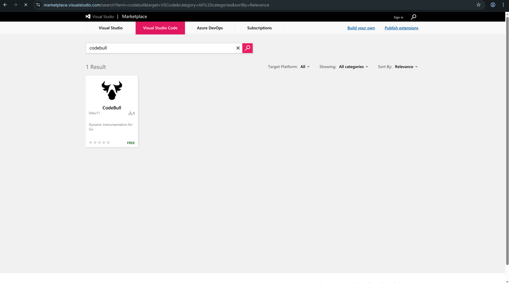
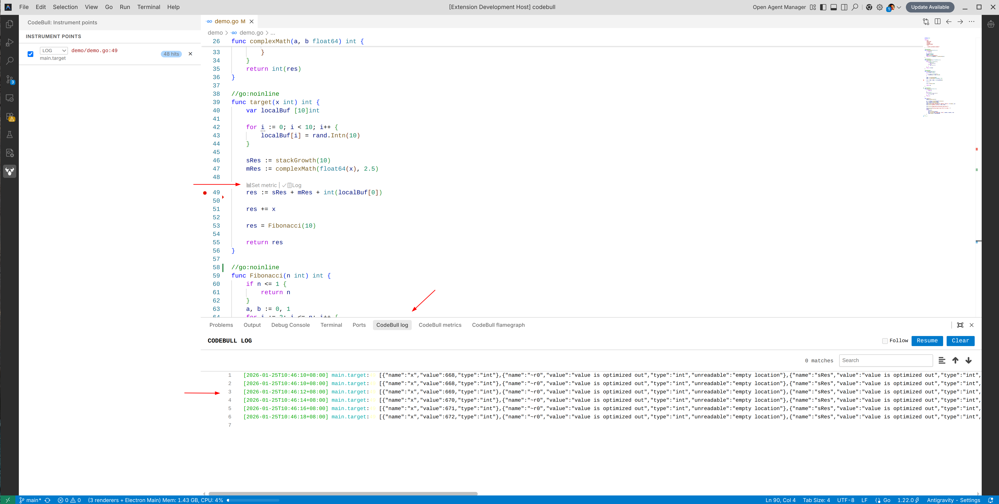
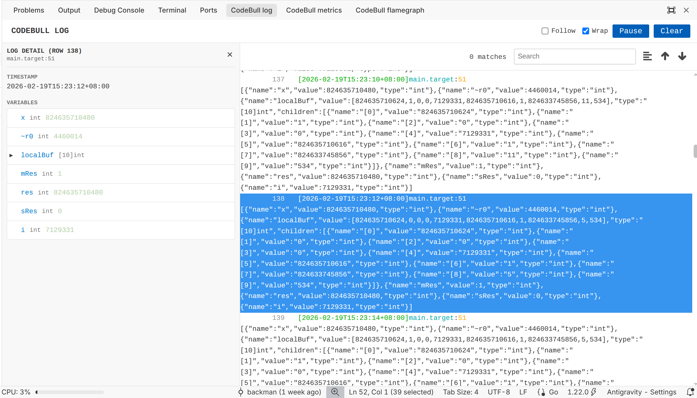
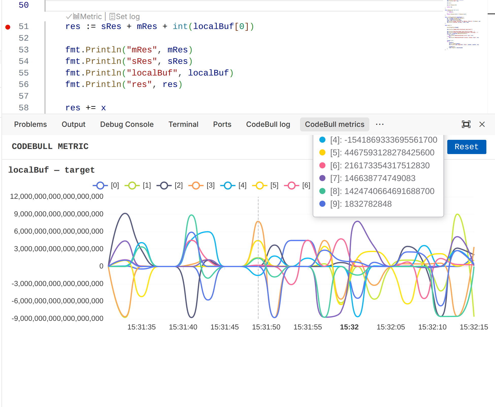

Getting Started with CodeBull
Use this guide to go from installation to live logs, metrics, and dashboard sharing in a few minutes.
Installation
Install the extension from the VS Code Marketplace, then open the Go project you want to observe.
Quick setup
- Search for "CodeBull" in the VS Code Marketplace and click Install.
- Open your Go project in VS Code.
- Add the following import to the service or binary you want to instrument.
import (
_ "github.com/0xbu11/codebull"
)
Dashboard Data Retention
Dashboard data can be retained for up to 30 days, making it easier to review recent trends and share results with your team.

Injecting Logs
Open any Go file and look for the CodeLens actions above a function or line.
Click "Set Log" to place a dynamic log point. The next time that code path runs, CodeBull captures the log automatically.

Viewing Live Logs
Open the CodeBull Log panel to watch new entries arrive in real time.
Use this view to confirm that the log point fired, inspect values, and verify the execution flow without adding temporary print statements to your code.

Visualizing Metrics
Click "Set Metric" from CodeLens, then choose the variable you want to track.
Open the CodeBull Metric panel to see how that value changes over time. This is useful for watching counters, request data, and other runtime trends while the application is running.

Publishing a History Dashboard
Use the dashboard feature when you want to review or share instrument history outside your local session.
- Open the Monitor dashboard view in the CodeBull sidebar.
- Click "Generate monitor dashboard".
- Wait for CodeBull to upload local instrument history and generate the report page.
- Open the dashboard link or share it with your team.
The generated dashboard combines trends from multiple instrument points in one place. Each dashboard can include up to 30 days of history, making it easier to review recent changes and prepare a shareable report quickly.
If you collect more data later, run the same action again to publish an updated snapshot.